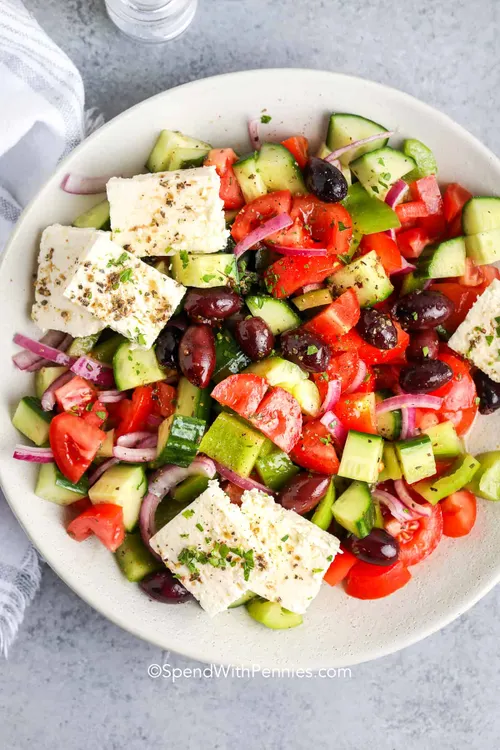

This salad doesn't have any leaves in it like most do, but it makes up for it. In Greece, they have the best tomatoes in the world, so unfortunately we won't be able to replicate it completely because, well, we don't have the best tomatoes in the world elsewhere. This is a refreshing and light salad.
Takes about 5-9 minutes to make